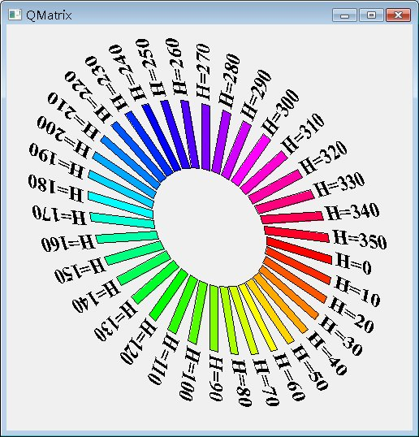

| QPainter預設的座標系統是繪圖裝置的座標系統，也就是左上角為原點，向右為正X，向下為正Y的座標系統，座標系統的轉換常使用矩陣的方式來表現及進行運算，QMatrix的作用，正是讓您可以利用其內建的矩陣，設定好相關的參數，然後讓QPainter根據QMatrix的設定，來進行一些二維座標系統的轉換動作。 QMatrix的內部使用一個3x3的矩陣：
dx與dy定義了水平與垂直移動，m11與m22定義了水平與垂直縮放（scaling），m12與m21定義了垂直與水平扭曲（shearing），想像您是坐在太空船中，在太空船從左上原點開到某個點之後，（x, y）是以您為中心所看到的座標，但實際上太空船相對於左上角為原點的座標為（x', y'），QMatrix的矩陣可以如以下的公式，將（x, y）轉換為（x', y'）： x' = m11*x + m21*y + dx
y' = m22*y + m12*x + dy 當您使用QPainter要進行繪圖時，可以您為中心所看到的座標系統(x, y)，使用QPainter的相關API來進行相關圖形的繪製，這就像您在太空船中畫圖一樣的方便，若有設定QMatrix，則會自動轉換為電腦繪圖時所 看到的座標系統（x', y'），如此就不用親自進行一些複雜的轉換動作，進行繪圖時也較為直覺。 您可以藉由QMatrix的setMatrix()方法設定m11、m12、m21、m22、dx、dy，或者是直接使用translate()、rotate()、scale()與shear()等方法來直接進行移動、旋轉、縮放、扭曲等座標轉換。 以下的範例為色彩輪的繪製，藉由設定HSV（Brightness,Hue, Saturation）中的「色相」來完成彩虹般的效果， HSV中的「色相」（Hue）是錂鏡分光，主要有紅、橙、黃、綠、藍、紫...等八個主要色相。「亮度」（Brightness）是明暗表現，由白至黑的 表現，在P.C.C.S（Practical Color Coordinate System）配色系統中，將之分為白、淺灰（淺，深）、淺中灰、中灰、暗中灰、暗灰（淺，深）、黑等。「彩度」(Saturation)也就是色彩的飽 和程度，彩度最高的稱之為「純色」，最低為「無顏色」。 #include <QApplication> 下圖為執行時的參考畫面：  |